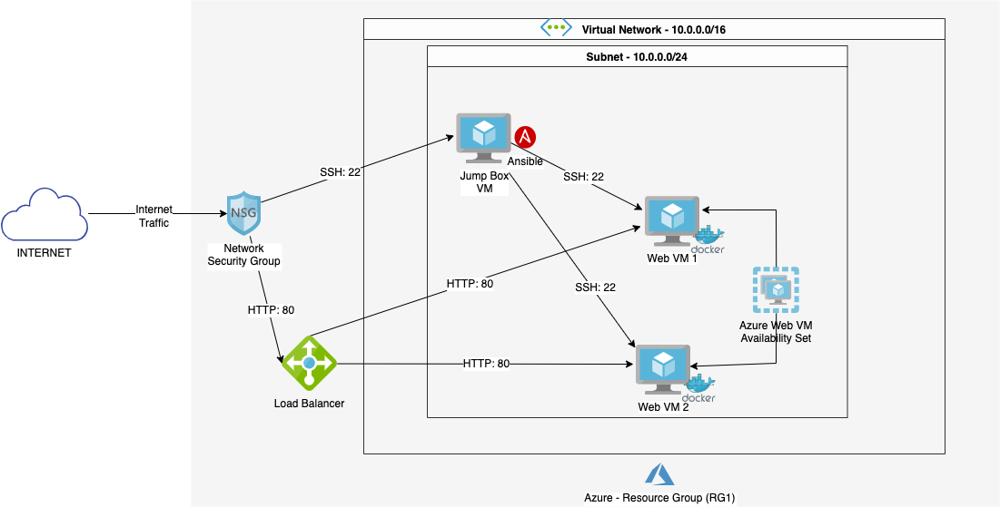

Here is a portfolio of my Cyber projects. Click to Expand:
AWS Cloud Resume
My Professional Resume hosted on Amazon's AWS Cloud Services.
- Domian Name Registration: Route 53 module
- Website Hosting: AWS Amplify
- Version Control: GIT Version Control
- Web-Programming Languages: HTML, JavaScript, CSS
Microsoft Azure Network Map

Assessing Risk of Phishing Emails
Show users how easy it is to create phishing emails and
how to protect themselves from it
- Server Software: Ngrok
- Webpage Software: Blackeye
What is Phishing ?
Phishing is a common tactic that cyber criminals use nowadays to steal personal and financial information from us.
Phishing messages can come in any form: Email, text messages social media or phone calls.
Ngrok
Ngrok is a cross-platform application that enables developers to expose a local development server to the Internet with minimal effort.
The software makes your locally-hosted web server appear to be hosted on a subdomain of ngrok.com, meaning that no public IP or domain name
on the local machine is needed.
Blackeye
Blackeye is a powerful open-source "Phishing Tool". Blackeye offers phishing template web pages for popular platforms such as
Facebook, Instagram, Google, Linkedin, WordPress, Microsoft, custom template etc.
Performing a Phishing Atatck
Disclaimer: For eductaional purposes only
For our demonstration purposes, we will create a
Credential Harvesting Email ,
which is an email that tricks the user into entering their credentials into a fraudulent website
to steal their login information.
Demo would be here
Mitigation and User Safety
Here are 6 simple tips to identifying and preventing phishing scams.
1. Understand how a phishing scam works.
Although new phishing attack techniques are always being developed, they all have some characteristics that may be identified if you know what to look for. There are numerous websites online that can keep you up to date on the most recent phishing attacks and their key identifiers. The earlier you learn about the most recent attack techniques, the more likely you are to prevent a prospective assault.
2. You should not click that link.
Even if the sender is known, it's generally not a good idea to click on a link in an email or instant message. You should at the very least hover over the link to check that the destination is the correct one. Some phishing attempts can resemble an exact replica of the legitimate website and be designed to capture keystrokes or collect login and credit card information.
3. Anti-Phishing Add-ons
Most modern browsers let you download add-ons that detect the signs of a fraudulent website or warn you about known phishing websites. They are typically entirely free.
3. Anti-Phishing Add-ons
Most modern browsers let you download add-ons that detect the signs of a fraudulent website or warn you about known phishing websites. They are typically entirely free.
4. Avoid providing your information to unsecure websites.
Don't enter sensitive information or download files from a website if the URL doesn't begin with "https" or if you can't see a closed padlock icon next to the URL.
5. Install those updates
It can be annoying to constantly receive update alerts, and it can be tempting to delay or disregard them. Avoid doing this. Security updates and patches are published for a cause, most frequently to close security gaps in order to stay current with contemporary cyber-attack techniques.
6. Change passwords regularly
You should make it a practise to change your passwords frequently to stop an attacker from acquiring unrestricted access. By adding an extra layer of security through password rotation, you can stop ongoing attacks and keep potential attackers out of your accounts even if you weren't aware that your accounts had been hijacked.
Monitoring and alaysing an attack on organization through:
SPLUNK Presentation
- OS: Ubuntu Linux
- Software: SPLUNK
Penetration Testing report for a mock organization:
Megacorp One Report
- OS: Kali Linux
- Network Scanner: Nmap
- Vulnerability Scanner: Nessus
- Penetration software: John The Ripper, Metasploit
- Tactics and Techniques: MITRE Matrix
Various troubleshooting activities while making the website
-
Website not responsive
Solution:
Made use of bootstrap4 framework
-
LinkedIn badge not working :
Solution:
Moved the javascript (JQuery) down from the HEAD section of
the html page to just before closing "BODY" tag of HTML page, so that javascripts loads
after the page to render the linkedIn badge as earlier it couldn't load as there was no page elements
-
Cybergeekricky.com domain not reflecting changes :
Solution:
There was a branch created out from the main repository of GIT.
Changes were being pushed from the local instance of the website to the GIT branch.
To get the changes, a pull request was created from main repositore to the branch,
and therefore the website domain reflected all recent changes.
-
Cybergeekricky.com not working but aws.cybergeekricky.com is working :
Solution:
After a few hours spent on domain redirection on AWS, it was found that
there was a subdomain missing www . After adding "www" prefix to a new subdomain, the website
started working perfectly.